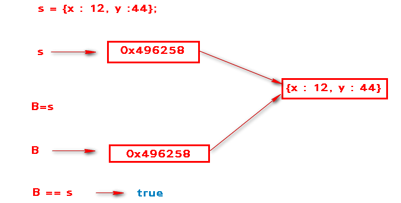

JavaScript Temelleri
Bölüm 2
Temel Bilgiler
2.8 - Karşılaştırma İşlemcileri
Bölüm 2 Sayfa 10
2.8.1 - Değerle Karşılaştırma İşlemcisi (==) (Eşitlik İşlemcisi)
Değerle karşılaştırma işlemcisi, iki değeri birbiri ile karşılaştırır. Karşılaştırma sonucu iki değer birbirine eşitse true eşit değilse false sonucunu verir.
Çok basit gibi görünen bu işlem, tüm programcılar için çok dikkat edilmesi gereken noktalar içerir.
Dikkat edilmesi gereken noktalardan ilki, çok küçük kayan noktalı değerler (ondalıklı sayılar) için bilgisayarların eşitlikte hata yapabilmeleridir. Bu nedenle epsilon gibi küçük sayılar eşitlik işlemcisi ile değil, büyüktür (>) veya küçüktür (<) işlemcisi ile karşılaştırılmalıdır.
İkinci dikkat edilecek nokta, sözel verilerin eşitliğini yüzde yüz garanti ederek belirtmenin çok zor olmasıdır. Bu veriler, boşluklar içerebilir, hatalı yazılabilir. Bazen türkçe karakterler sorun çıkarabilir. Bu veriler, normalize etmek olarak adlandırılan bir seri ön işleme tabi tutularak ne kadar güvenli olursa o kadarla yetinerek karşılaştırılır. Bu işlemler, en basitinden boşlukların kaldırılması, tüm karakterlerin küçük veya büyük karakterlere dönüştürülmesi gibi işlemleri içerirler. Normalizasyon her gereksinmeye göre farklı işlemleri içerir ve tam bir teknoloji gösterisine dönüşebilir. Bu nedenle, ham sözel verilerin karşılaştırılmasına girişmemek daha güvenli ve olumludur.
Tamsayıların karşılaştırılması tam güvenlidir. Bu nedenle programlarda, arama işlemlerinin sağlıklı yürütülebilmesi için, üye numaraları, vatandaşlık numaraları gibi tamsayı veri alanları oluşturulur ve karşılaştırmalar bu tamsayı veriler üzerinden yürütülür.
Değeri aynı nesneye işaret eden, eşit bellek işaretçileri olan iki veri eşit kabul edilir. Bunun için ilk olarak bir s değişkenine bir nesne atanır. Bu işlemde, nesne belirli bir bellek bölgesine yerleştirilir ve s değişkenine bu bellek bölgesinin işaretçisi olan bir hex tamsayı değeri yerleştirilir. Bir başka B değişkenine s değeri aktarılırsa, s deki değer sayı tipinde bir ilkel değişken olduğundan, B ye değerle aktarılır (kopyası B ye atanır). Bu durumda B ve s de aynı hex değerler atanmış olur. Bu hex değer, nesnenin yerleştirilmiş olduğu bellek bölgesinin işaretçisidir. s ve B deki değerler aynı olduğundan değerle karşılaştırılma sonucu true sonucunu verir. Aslında, karşılaştırılan sadece aynı nesneye erişimi sağlayan biribirleri ile değer ve tip olarak aynı olan ve iki ayrı değişkene atanmış olan bellek işaretçilerinin değerleridir.

Nesne Verilerinin Referanslarının Karşılaştırılması.
Bu süreci açıklayan bir uygulama nın, JavaScript kodları aşağıda görülmektedir
... var s = {x : 12, y : 44}, B =null; B = s; sonuçYaz('B === s Karşılaştırmasının sonucu : ', B ===s, 'b2.8.1-uyg-1-sonuç-1'); ...
Sonuç :
Bu sonuç belki biraz alışılmamış sayılabilir. Fakat, paragraf 2.7.5.6 daki tablo incelenince bu sonucun doğal olduğu anlaşılır. Yukarıdaki şemaya bakılırsa, bir nesneyi işaret eden s değişkenin belleğinde bir hex sayı olan bir bellek işaretçisi bulunacaktır. Bu bellek işaretçisi, B değişkenine aktarıldığında, hem s, hem de B de aynı bellek bölgesine işaret eden eşit bellek işaretçileri olduğu görülür. Bellek işaretçileri tamsayı ilkel verilerdir ve değerle kopyalanarak aktarılırlar. Aktarılma işlemi sonunda, s deki değerin bir kopyası B ye aktarılır. B ve s değişkenlerinin değerleri aynı olduğundan, karşılaştırma sonucu olumlu çıkmaktadır.
Nesne sınıf örnekleri, sınıfları ve içerikleri aynı bile olsa, farklı bellek bölgelerinde bulunduklarından ve bu bölgelere işaret eden bellek işaretçilerinin değerleri birbirlerinden farklı olduğundan, farklı olarak algılanırlar. Bu konuda bir JavaScript programı ve bağlantılı olduğu uygulama sayfasında verdiği sonuç, aşağıda görülmektedir:
... var s = {x : 12, y : 44}, B = {x : 12, y : 44}; sonuçYaz('B === s Karşılaştırmasının sonucu : ', B === s, 'b2.8.1-uyg-2-sonuç-1'); ...
Program Sonucu :
Bu uygulama ve sonucu,çok önemlidir. Karşılaştırma işlemlerinde, neslerin tümü değil, özellikleri başka değerlerle karşılaştırılmalıdır.
null ve undefined değerleri, değerle karşılaştırma sonucunda eşit olarak değerlendirilir. Bu konuda, daha önce verilmiş bir uygulamanın, JavaScript kodları aşağıda yeniden verilmiştir:
/* <![CDATA[ */ /* Bu Program bdelib.js Kitaplık Programını Kullanmaktadır */ function sonuç() { var s = null; bilgiYaz(s == undefined, 'b2.2.2-uyg-2-sonuç'); } sayfaYüklendiktenSonraÇalıştır(sonuç); /* ]]> */
Sonuç :
Bu şaşırtıcı sonuç, biraz sonra inceleyeceğimiz hem değer hem de tiple kontrol yapan eşdeğerlik işlemcisi (===) kullanıldığında ortadan kalkar. Bu nedenle, her olanak olduğunda, eşitlik işlemcisi (==) yerine, eşdeğerlik işlemcisi (===) kullanılması daha doğru olur.
Yukarıda görülen uygulamanın, JavaScript kodlarında küçük değişiklikler yapılarak her türlü ikili karşılaştırma işlemcisinin vereceği sonuç, kolayca izlenebilir. Ayrıca, JavaScriptDeneme, programı da, bu gibi küçük denemeler için çok uygundur. Bu programda, basitçe undefined == null yazarak işlem tuşuna basınız. İşlem sonucu, sonuç kutusunda görüntülenecektir.
Aşağıdaki tabloda verilen tüm sonuçlar, JavaScriptDeneme, programı kullanılarak elde edilmiştir.
| İşlenen 1 | İşlemci | İşlenen 2 | Sonuç |
|---|---|---|---|
| NaN | == | NaN | false |
| null | == | null | true |
| undefined | == | undefined | true |
| true | == | true | true |
| 44 | == | 44 | true |
| 12.8775566443388 | == | 12.8775566443388 | true |
| '38.539' | == | 38.539 | true |
| 'Cağaloğlu' | == | 'Cağaloğlu' | true |
| 'Cağaloğlu' | == | 'cağaloğlu' | false |
| {w :3} | == | {w :3} | false |
| new Number (4) | == | new Number (4) | false |
| new Boolean(true) | == | new Boolean(true) | false |
| new String('Güntan') | == | new String('Güntan') | false |
Tablodaki sonuçlar aşağıda sırası ile incelenmektedir:
2.8.2 - Değer ve Tiple Karşılaştırma İşlemcisi (===) (Eşdeğerlik İşlemcisi)
Eşdeğerlik işlemcisi, karşılaştırdığı işlenenlerin hem değer hem de veri tipi olarak aynı olmasını gözetir. Karşılaştırma öncesi herhangibir tip uyarlaması yapılmaz.
Eşdeğerlik işlemcisinin uygulanmasına ait örnekler, aşağıda tartışılmıştır.
undefined === undefinedSonuç :true null === nullSonuç : true
fakat,
null === undefinedSonuç : false
Bu sonnuçlar doğaldır çünkü, undefined ve null farklı tipte verilerdir. Her ikisinin de değerleri bir tür boşluk olduğundan, eşitik işlemcisinin bunları eşit olarak algılaması açıklanabilir. Fakat, bu değerler asla eşdeğer olamazlar çünkü veri tipleri farklıdır.
true === true Sonuç : true false===false Sonuç : true 12 === 12 Sonuç :true
fakat,
'12' === 12 Sonuç :false
Tipleri ve değerleri aynı olan ilkel veriler eşdeğerdir. Fakat, tipi farklı olan ilkel veriler eşdeğer değillerdir. Eşitlik işlemcisi ile sınandıklarında, eşit olarak değerlendirilebilirler.
NaN === NaN Sonuç : false
NaN kendi kendine dahil hiçbirşeye eşit ve eşdeğer değildir.
'Ilgaz'=== 'Ilgaz'Sonuç : true
İki karakter dizgisi veri aynı sayıda karakter içerdiklerinde ve içerdikleri karakterler aynı ve aynı dizilimde iseler eşdeğer kabul edilirler. Aksi halde eşdeğer ve eşit kabul edilmezler. Karşılaştırmadan önce, Unicode normalize formunun uygulandığı varsayılır.
Eğer iki bellek işaretçisi, bellekte aynı bölgeye işaret ediyorlarsa eşdeğer kabul edilirler. Eğer farklı bölgelere işaret ediyorlarsa, bu bölgelerde bulunan verilerin yapıları aynı ve özellik değerler de aynı olsa bile birbirlerinin eşdeğeri ve eşiti olarak kabul edilmezler. Yukarıdaki şemada belirtilen işlemler gözönüne alındığında,
B === s veya tersi s ===B Sonuç :true
olur.
Tüm yukarıdaki bilgilerin ışığında,
2.8.3 - Eşit Değil (!=) ve Eşdeğer Değil (!==) İşlemcileri
Bu işlemcilerin çalışması, eşdeğer eşitlik (==) ve eşdeğerlik (===) işlemcileri gibidir. ! işlemcisi, mantıksal NOT işlemcisi gibi çalışır. Bu işlemcilerin uygulanması da aynen karşı gelen (==) ve (===) işlemcileri ile aynıdır.
Eşit değil işlemcisi , a != b yerine, a!(a == b) şeklinde de kullanılabilir. Bu kullanım şekli, bu işlemcinin aslında iki işlemcinin ardışık olarak kullanılmasından oluştuğunu belirtmektedir.
2.8.4 - < , <= , > ,>= İlişkisel İşlemciler
İlişkisel işlemcilerin uygulanması, eşitlik işlemcilerinin uygulanmasından farklı olarak, JavaScript yorumcusunun karşılaştırılacak büyüklüleri sayısal değerlere çevirme çabası ile başlar. Bu durumda iki farklı nesne bile sayısal değerlere çevrilebilirlerse karşılaştırılabilirler. İlişkisel işlemciler,
solİşlenen ilişkisel işlemci sağİşlenen
şeklinde kullanılırlar. Burada ilişkisel işlemci, her türlü ilişkisel işlemci olabilir.
Genel olarak bir karşılaştırma işleminde, JavaScript yorumcusu,
2.8.5 - Üçlü Koşul İşlemcisi (?) (Üçlü İşlemci)
Üçlü koşul işlemcisi ? JavaScript programlama dilinin üç tane işlenen ile çalışan tek işlemcisidir. Çalışma şekli aşağıdaki gibidir:
işlenen1 ? işlenen2 : işlenen3
Bu ifade, işlenen1 sonucu doğrulanırsa ikinci işlenenin sonucunu, yoksa üçüncü işlenenin sonucunu döndür olarak okunmalıdır. Belki daha kolay akılda kalacak bir söyleyiş şekli, birinci işlenen doğruysa ikinci işleneni, yoksa üçüncü işleneni döndür şeklinde olabilir.
Üçlü işlemcinin ilk işleneni mantıksal bir ifade veya mantıksal bir sonuca indirgenebilecek bir ifade olmalıdır. İkinci ve üçüncü işlenenler istendiği gibi ifadeler olabilir.
Üçlü işlemci, ileride göreceğimiz, bir if..else bildiriminin kısaltılmış şeklidir. Bu işlemci kullanılarak yapılmış bir uygulamanın JavaScript kodları aşağıda görülmektedir:
/* <![CDATA[ */ function üçlüİşlemci(){ var t = 9, p = 4, g = 18; var d = ((t - p) == 5) ? (t - p) : (g - t); bilgiYaz(d , '2.8.5-uyg-1-sonuç-1'); } sayfaYüklendiktenSonraÇalıştır(üçlüİşlemci); /* ]]> */